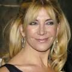
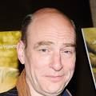
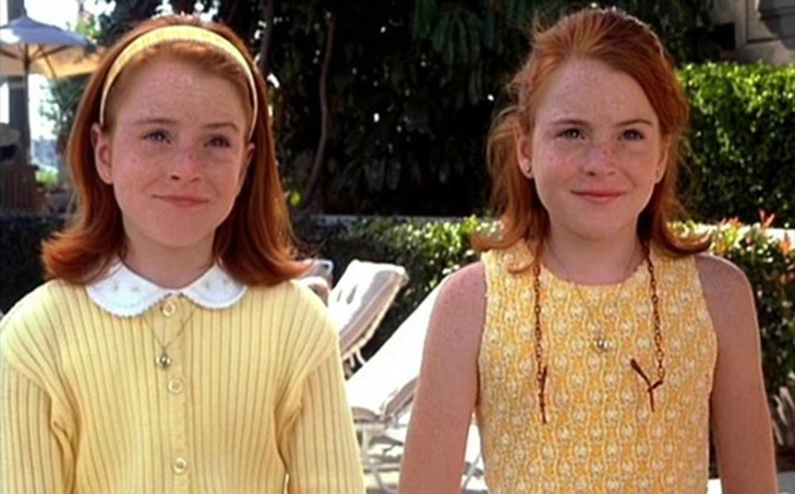
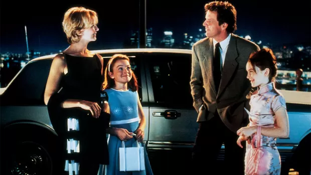
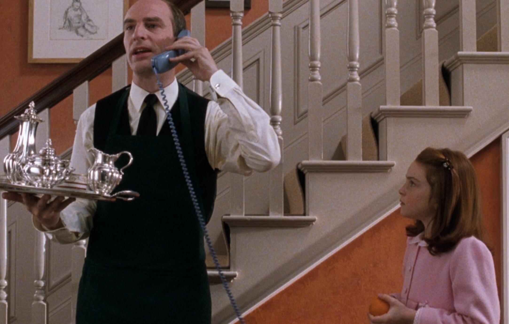
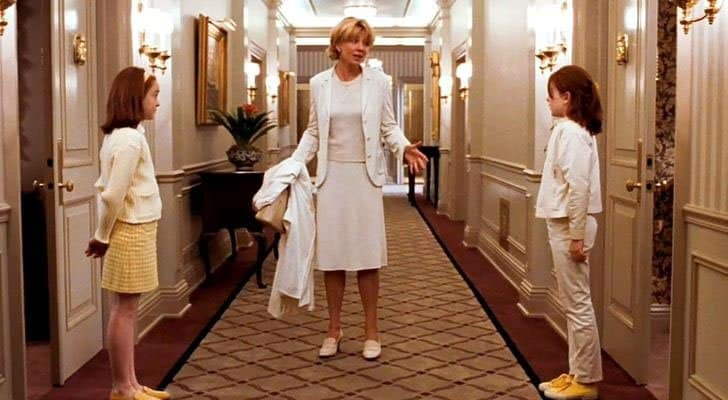
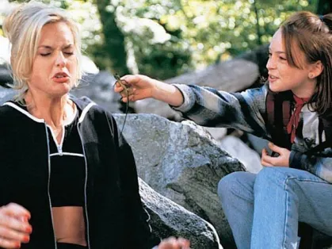
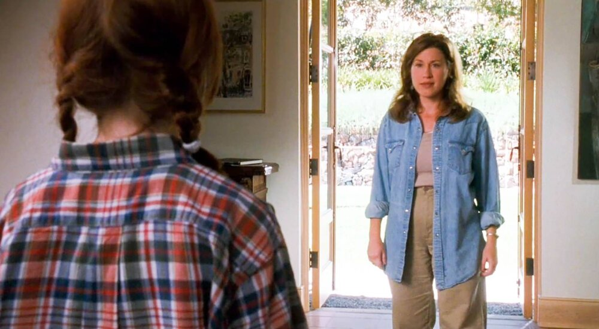

Operação Cupido (The Parent Trap, 1998) narra a história das gêmeas idênticas Hallie Parker e Annie James (interpretadas por Lindsay Lohan), que foram separadas ao nascer devido ao divórcio de seus pais. Elas crescem sem saber da existência uma da outra: Hallie vive na Califórnia com o pai, o viticultor Nicholas Parker (Dennis Quaid), enquanto Annie mora em Londres com a mãe, a estilista Elizabeth James (Natasha Richardson).
Trailer:
Elenco:
Lindsay Lohan
É uma renomada atriz e produtora norte-americana nascida em 1986, no filme "Operação Cupido", ela interpreta as gêmeas Hallie Parker: Criada pelo pai na ensolarada Califórnia (EUA). Ela tem um estilo mais despojado, é extrovertida, autêntica e tipicamente americana, e Annie James: Criada pela mãe na sofisticada cidade de Londres (Inglaterra). Ela possui modos mais refinados, um comportamento formal e fala com um clássico sotaque britânico. Além disso, sabe esgrima.
Natasha Richardison (1963–2009)

Foi uma aclamada e elegante atriz britânica, membro da prestigiada dinastia teatral Redgrave. Ela interpretou Elizabeth James: Uma refinada, bem-sucedida e charmosa estilista de vestidos de noiva que vive em Londres. Inicialmente, ela cria apenas a filha Annie, sem saber que a outra gêmea, Hallie, cresceu nos Estados Unidos.
Dennis Quaid
Dennis Quaid é um aclamado e prolífico ator norte-americano, nascido em 1954 no Texas. Ele deu a vida ao personagem Nick Parker: Um próspero, trabalhador e descontraído dono de um belíssimo vinhedo em Napa Valley, na Califórnia (EUA). Ele cria a filha Hallie com a ajuda da governanta Chessy, mantendo um estilo de vida rústico, caloroso e tipicamente americano.
Elaine Hendrix
Elaine Hendrix é uma talentosa atriz, dançarina e ativista norte-americana, nascida em 1970 no Tennessee. Ela interpretou Meredith Blake: Uma jovem publicitária de 26 anos de São Francisco, extremamente glamorosa, ambiciosa e sofisticada. Ela fica noiva do milionário Nick Parker, mas suas verdadeiras intenções são puramente financeiras.
Lisa Ann Walter
Lisa Ann Walter é uma talentosa e carismática atriz, comediante, roteirista e produtora norte-americana, nascida em 1963 em Maryland. Ela interpreta a personagem Chessy: A dedicada, bem-humorada e protetora governanta (e babá) da casa de Nick Parker na Califórnia. Mais do que uma funcionária, Chessy é uma figura materna para Hallie, conhecendo cada detalhe da vida da menina.
Simon Kunz

Simon Kunz é um aclamado ator de teatro e cinema britânico, nascido em 1954 em Londres. Ele edeu a vida a personagem Martin: O impecável, refinado e profundamente leal mordomo da mansão de Elizabeth James na Inglaterra. Elegante em seus ternos, ele cuida de Annie com um carinho paternal e é seu maior cúmplice no dia a dia.
Galeria






Curiosidades
Nomes reais: As gêmeas se chamam Hallie e Annie em homenagem às filhas da diretora Nancy Meyers e do produtor Charles Shyer, que também fizeram pequenas participações especiais no longa.
O segredo do aperto de mão: O icônico e complexo aperto de mão secreto entre Annie e o mordomo Martin foi totalmente improvisado e criado por Lindsay Lohan e o ator Simon Kunz. Eles levaram cerca de duas a três horas durante os ensaios para montar a coreografia completa de 18 passos.
A cena recordista de takes: A emocionante cena em que a governanta Chessy descobre que Hallie na verdade é a Annie levou impressionantes 73 takes para ser concluída ao longo de vários dias, até que a equipe alcançasse o tom dramático exato.
Família Lohan em peso: O garoto perdido que aparece no acampamento e descobre assustado que o lugar é exclusivo para meninas é Michael Lohan, irmão mais novo de Lindsay na vida real. Além dele, a mãe de Lindsay (Dina) e seus outros irmãos (Alana e Dakota) aparecem como figurantes de fundo na cena do aeroporto em Londres.
O truque perigoso do balão: Na icônica cena do acampamento em que as meninas caem na armadilha e um balão de água cai na cabeça de uma das monitoras, a produção precisou esconder uma agulha de verdade no cabelo da dublê. Sem a agulha, o balão corria o risco de atingir a cabeça da profissional sem estourar, o que poderia causar uma lesão no pescoço.
A polêmica do furo na orelha: A famosa cena em que Hallie fura a orelha de Annie com uma agulha e um gelo no acampamento causou dor de cabeça para os exibidores. Para o filme, Lindsay Lohan teve que furar as orelhas de verdade com um profissional. No entanto, com medo de que crianças imitassem o ato perigoso em casa, o Disney Channel do Reino Unido cortou a cena de suas transmissões por anos.